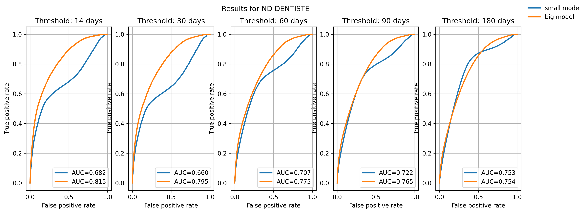

G4H - From embeddings to causal inference
1 Medical pathway embeddings
1.1 Data
We consider a dataset (X_i)_{i = 1..n} of medical pathways. For each patient i, X_i \coloneqq (e_i, t_i, f_i), where:
- e_i \in \mathbb{R}^{cs} denotes the vector of tokenized events. It is a tensor1 which size is common for all patients2 (an hyperparameter called the context size, cs), that contains integers between 0 and the vocabulary size \lvert \mathcal{V} \rvert.
- t_i \in \mathbb{R}^{cs} is the temporal vector, containing the dates3 for each event in e_i. For now we only consider consultation and medication type of events.
- f_i \in \mathbb{R}^{2} corresponds to the patient general features, for now age and gender.
At this stage, the pathways only contain consultations and pharmaceuticals events. We plan to add way more types of event, including deaths, hospitalizations, medical procedures etc.
1.2 Transformer-based models
1.2.1 Architecture
An embedding matrix of size \mathbb{R}^{\lvert \mathcal{V} \rvert, d_{embed}} projects each token of the sequence to an embedding vector. Adapting from the classical Transformer, we use t_i to have a time-aware positional encoding using a sinusoidal encoding. At the beginning of the sequence, we add a symbolic [START] token, composed of the summed embeddings of age and gender.
These embeddings are then passed to causal4 self-attention layers, so that the Transformer-based model outputs causally contextualized embeddings for each token: GPT_{\theta}(X_i) \in \mathbb{R}^{cs, d_{embed}} where \theta parametrizes the neural network.
1.2.2 Pre-training strategy
At a given position in the pathway, we consider the pre-training task of predicting, for each token, if it will appear within the next t days. We consider, simulatenously, several t \in \mathcal{T}, \mathcal{T} being the sorted set of short term horizons, typically 14, 30, 60, 90, 180 days.
Let, for this task:
- g_{\phi} \colon \mathbb{R}^{cs, d_{embed}} \to [0, 1]^{cs, \lvert \mathcal{V} \rvert, \lvert \mathcal{T} \rvert } the neural prediction head for this task (parametrized by \phi), on top of the Transformer layers
- for a patient i, Y_{i, \cdot, \cdot, \cdot} \in \{ 0, 1 \}^{cs, \lvert \mathcal{V} \rvert, \lvert \mathcal{T} \rvert} the ground truth5
The pre-training solves:
\begin{align*} \theta^{*}, \phi^{*} \in \arg\!\min \; & \sum_{i=1}^{n} \sum_{\text{pos}=1}^{cs} \sum_{w \in \mathcal{V}} \sum_{t \in \mathcal{T}} \text{BCE}\left( g_{\phi} \circ GPT_{\theta}(X_i)_{\text{pos}, w, t}, Y_{i, \text{pos}, w, t} \right) \\ & + \lambda \, \text{Mon}\left( g_{\phi} \circ GPT_{\theta}(X_i) \right) \end{align*}where:
- \text{BCE}(x,y) = y \log(x) + (1-y) \log(1-x)
- for all i, \text{Mon}\left( g_{\phi} \circ GPT_{\theta}(X_i) \right) \coloneqq \sum_{t, t' | t' > t} \max \left(0, g_{\phi} \circ GPT_{\theta}(X_i)_{\cdot, \cdot, t} - GPT_{\theta}(X_i)_{\cdot, \cdot, t'} \right)
1.2.3 Results
We trained a “large” model (40M parameters) and a “small” one (5M parameters). It seems that the big model improves the result, leading us to think there is a signal to capture and that the task is “learnable”.

Still, the models converge quickly, and even small models achieve good convergence. This raises the (open) question of complexifying the task at some point.
2 Causal inference
We are interested in the impact of losing one’s Médecin Traitant (Primary Care Provider, PCP) on different health outcomes, and ultimately how this impact is varying across several groups (for instance between regions with dense medical services and medical deserts). Such a shock - due to death or retirement of the doctor - affects approximately 1M patients in France every year (1,000 GPs are leaving each year, each one them being the PCP of 1,000 patients on average).
2.1 Framework
Up to a given time t, we have:
- The covariate X_{<t} \coloneqq (e_{<t}, t_{<t}, f_{<t}), the medical history of the patient
- W_t is the treatment at time t and can either be:
- the proportion of days the patient has spent without a PCP during the period [t- \delta_{PCP}, t], \delta_{PCP} being a hyperparameter controlling the length of the window
- the maximum number of consecutive days without having a PCP, anytime in the past
- Y_t (W_t), the binary outcome, indicating whether death has occured within a given time window [t, t+ \delta_d](which length \delta_d is again chosen)
2.2 Estimating the CATE
We want to estimate the Conditional Average Treatment Effect (CATE):
\tau(x, w) \coloneqq \mathbb{E}[Y_t \mid X_{<t} = x, W_t = w]
2.2.1 Assumptions
SUTVA : Y_t(w) = Y_t \quad \textit{ if } W_t = w
- The others not having a PCP for a given amount of time does not influence my probability to die
- Only one version of treatment ?
Conditional ignorability
\forall w \in \mathbb{R}_{+}, Y_t(w) \perp W_t \mid X_{<t}
- Overlap
0 < \mathbb{P}(W_t = w | X_{<t} = x) < 1, \forall (w,x) \in (\mathbb{R}_{+}, \mathbb{R}^{d_{embed}})
2.2.2 Estimators
For a given time t, we define {pos}_t as being the last position in the patient’s pathway before t, and we define the embedding of the pathway:
GPT^{\text{path}}(X_{<t}) \coloneqq GPT_{\theta^{*}}(X_{<t})_{{pos}_t} \in \mathbb{R}^{d_{embed}}
S-learner & T-learner
The S-learner is based on “outcome models” that try to capture the link between the outcome and the features (Abécassis et al. (2025)).
More precisely, we train on the validation set a head g_{\phi}: \mathbb{R}^{d_{embed}} \times \mathbb{R}_{+} \to [0,1] minimizing the binary cross-entropy loss on death prediction - to obtain \phi^{*}6. At the end of the day:
\hat{\tau}_{\text{SLearner}}(x, w) \coloneqq g_{\phi^{*}} (GPT^{\text{path}}(x), w) - g_{\phi^{*}} (GPT^{\text{path}}(x), 0)
where the baseline is “not having lost your PCP / having a PCP during all the period”.
🔴 There is no T-learner for continuous treatment, a priori
R-learner
Another approach consists in trying to model the propensity score, the probability of being treated given X.
A first head g_{\phi_{m}}: \mathbb{R}^{d_{embed}} \to [0,1] is trained on the death prediction task, so that for a given pathway x, g_{\phi_{m}^{*}}(GPT^{\text{path}}(x)) is close to the conditional mean outcome m(x) = \mathbb{E}[Y_t | x].
Another head g_{\phi_{e}}: \mathbb{R}^{d_{embed}} \to \mathbb{R}_+ is trained to predict the treatment W_t of a given individual (minimizing a Mean Squared Error).
Finally, we train the CATE estimator training a head g_{\phi_{\tau}}: \mathbb{R}^{d_{embed}} \to [0,1] by minimizing the R-loss:
\begin{align*} \phi_{\tau}^{*} \in \arg\!\min_{\phi_{\tau}} \; & Y_t - g_{\phi_{m}^{*}}\left( GPT^{\text{path}}(X_{<t}) \right) \\ & - \left( W_t - g_{\phi_{e}^{*}}\left( GPT^{\text{path}}(X_{<t}) \right) \cdot g_{\phi_{\tau}}\left( GPT^{\text{path}}(X_{<t}) \right) \right) \end{align*}
🔴 There is no DR-learner for continuous treatment, a priori
2.3 Benchmarks
WIP
References
Footnotes
Actually, we consider several tensors (and several vocabulary sizes) - one for each type of tokens, but we do not get into the details here.↩︎
Shorter sequences are padded, longer are cropped.↩︎
To describe a date, we actually use the number of days since 01/01/2016, the start of the available dataset↩︎
The rationale for having a causal mask is that we want to be able to exploit any embedding at any time (with only one inference pass through the model) without them having “seen” the future. Typically, the pre-training task (see Section 1.2.2) is such a task. However, we still plan to train a BERT - pre-training task is still in discussion (see Section 2.3).↩︎
For each short term horizon t, we crop the pathways t before the end date of our dataset so that we can always compute a ground truth↩︎
In this formulation, we assume that the embeddings are frozen (we only train \phi at \theta^{*} constant). Another alternative is to fine-tune the Transformer model, training both \phi and \theta here, with the same task, same loss, same dataset. This is true for all the remaining of this document.↩︎